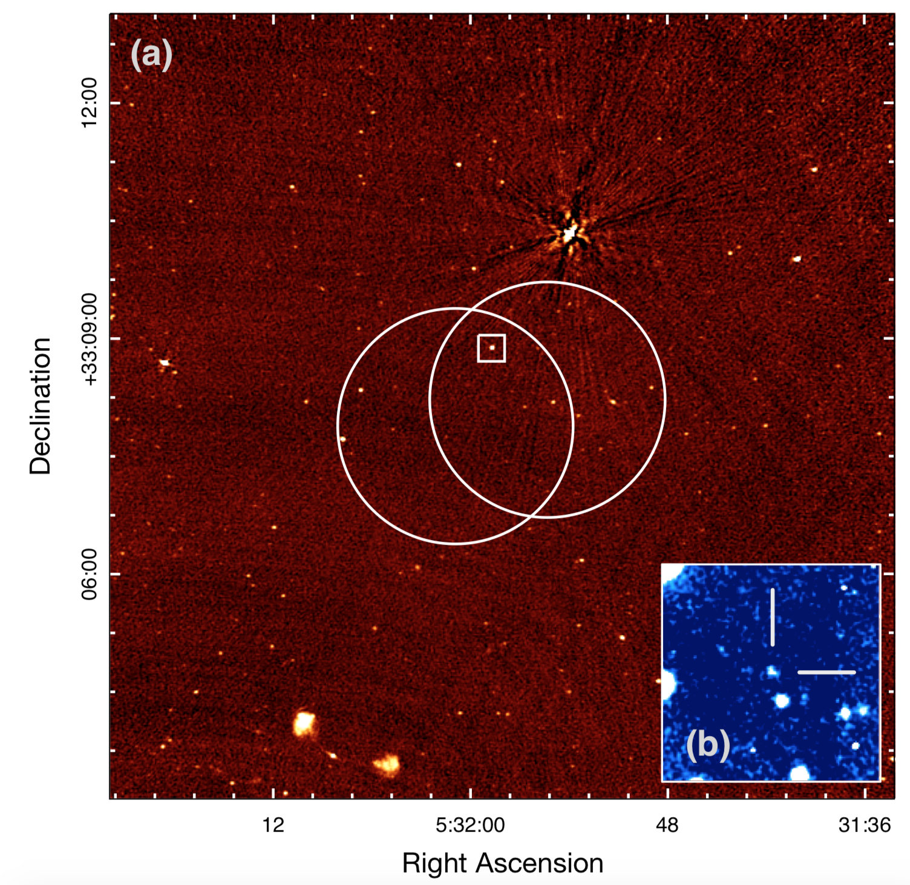

FRB 121102
Image from Chatterjee et al., 2017, Nature, 541, 58
Summary
- Detected by: Arecibo
- FRB coordinates (RA, Dec): 05:31:58.70 +33:08:52.5 (J2000)
- Host coordinates (RA, Dec): 05:31:58.70 +33:08:52.7 (J2000)
- Redshift: 0.1927
- Observed DM: 557 ± 2 pc cm-3
- Repeating: Yes
- References: 2016Natur.531..202S;
2017Natur.541...58C;
2017ApJ...834L...7T;
2017ApJ...843L...8B
Host galaxy properties
| Quantity | Measured value | Unit |
|---|---|---|
| Stellar mass | (0.14 ± 0.07) × 109 | M⊙ |
| Star formation rate | 0.15 ± 0.04 | M⊙/yr |
| Metallicity | < 8.08 | 12+log(O/H) |
| E(B-V) | 0.12 ± 0.01 | mag |
| Absolute r-band mag. | -16.20 ± 0.08 | mag |
| u - r color (rest-frame) | 1.49 ± 0.18 | mag |
| Half-light radius | 0.66 ± 0.03 | kpc |
| FRB offset from galaxy center | 0.57 ± 0.31 | kpc |
Emission line fluxes
| Emission line | Measured value |
|---|---|
| Hα | 2.61 ± 0.04 |
| Hβ | 0.96 ± 0.09 |
| [OIII] λ 5007 | 4.38 ± 0.08 |
| [NII] λ 6584 | < 0.12 |
| Telescope | Filter (eff. wavelength) | Magnitude (AB) |
|---|---|---|
| GMOS-N | g' (475 nm) | 23.33 ± 0.12 |
| GMOS-N | r' (630 nm) | 23.73 ± 0.14 |
| GMOS-N | i' (780 nm) | 24.54 ± 0.09 |
| GMOS-N | z' (925 nm) | 23.49 ± 0.13 |
| Spitzer | 3.6 (3.6 μm) | 23.79 ± 0.20 |
| Spitzer | 4.5 (4.5 μm) | > 24.7 |
| HST/WFC3 | F110W (1.1 μm) | 23.08 ± 0.01 |
| HST/WFC3 | F160W (1.6 μm) | 22.96 ± 0.03 |